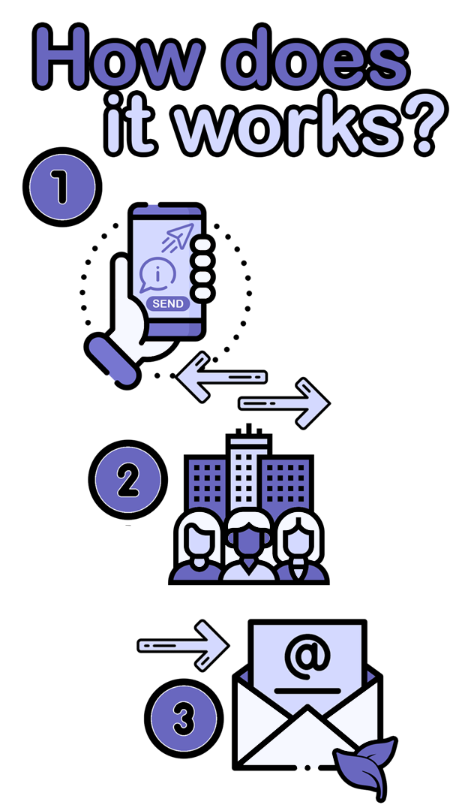

Lux Health Systems - How It Works

Digital Process
As soon as the employee clicks the "Send" button, all information about the care and activities performed at the client's residence is instantly transmitted to the system. The company securely stores, processes, and organizes this data in real time. After verification, the information is forwarded to designated family members or supervisors, who are immediately notified about the services provided to their loved one.
Digital: When the employee clicks "Send", all care and activity information is instantly sent to our secure system. The data is organized in real time and forwarded to designated family members or supervisors with immediate notifications.
Benefits
This digital process improves communication and transparency between caregivers and families, replacing outdated paper reports with a faster, more efficient, and eco-friendly solution. By digitizing the workflow, we ensure a modern, sustainable, and compassionate way to manage health and care information for everyone involved. We are developing these resources especially for homecare solutions. Contact us for info.
Benefits: This digital solution improves communication and transparency between caregivers and families, replacing outdated paper reports with a faster, more efficient, and eco-friendly approach to health and care management.